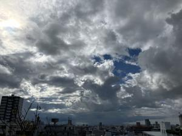
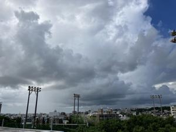
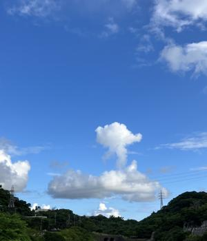
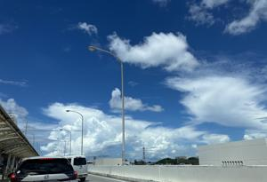

うるがいの話 ある日
最新: バタフライピーティー【うるがいの話 ある日】とは 一日だけのプログです
『うるがいの話』の最新一日だけのプログで、通信料が少なく経済的だ。カニの画像をクリックすると全ての日付が載る『うるがいの話』サイトを表示します
|
|
【うるがいの話】 うるがい(ｳﾙｶﾞｲ urugai)とは、『もずくがに』の名前でとても大きくなります。 |
|---|---|
|
|
【カミマヤーの話】 猫のことを方言でマヤーといいます。カミマヤー（kamimayaa）とは、神の猫のことです。 |
|
【たながぁの音楽】 たながぁ（ﾀﾅｶﾞｰ tanagaa）とは手長えびのことで、何種類かあり大きいのは車 エビぐらいになります。 |

|
【ぶながぁの話】 ぶながぁ(ﾌﾞﾅｶﾞｰ bunagaa)とは、赤い髪の毛、赤い身体、そして身長は１ｍ２０ｃｍ ぐらい、川の蟹を食べているの目撃された。場所は沖縄県国頭郡大宜味村のと ある村僕の隣近所に住んでいる爺さんから、聞いた話です。 |
|
|
【ギーマの話】 ギーマ(giima)とは、山原の里山に咲くスズランに似た、 花を付けます。実は食べられます、 気が付くと口の周りが紫になっています。 |
2024年09月06日 (金）バタフライピーティー
16:49
ベランダにバタフライピーの花が、咲いている。７つほど摘み。数日前お隣
さんから、タッパーの容器入れられたバタフライピーティーと、販売されて
いる花をもらった。見事な青である、味はしない。２リットルのノルマがあ
るので、昨日で飲み干した。今日からは、ベランダの花を使うことにした。
バタフライピーティーのレシピ（パクリです）
・バタフライピーを２～３輪、摘み取ります。
・摘みたての花びらから、おしべや花糸（かし）を取り除きます。ガクを捻
るようにして花弁から切り離すと比較的きれいに取れます。
・花びらを水で洗浄。ティーポットへ入れます。
・お湯を注いでしばし待つ。あっという間にお湯が青い色に染まり、ハーブ
ティーが完成です。
目の疲れや美白、動脈硬化や高血圧予防などにも効果があると言われていま
す。
フムフム、花がとれる間は続けることとする。それにしても、にわか雨が多
い。昨日の１６時４１分、ベランダから、にわか雨が降っているのが見えた
 
ウォーキングでみた、キノコ雲

空港まで連れっていってほしい、ン、聞いてないが！、空港でみた入道雲

１６時４０分 ビットコインの総資産 ￥２２、９１８（↓８２１）